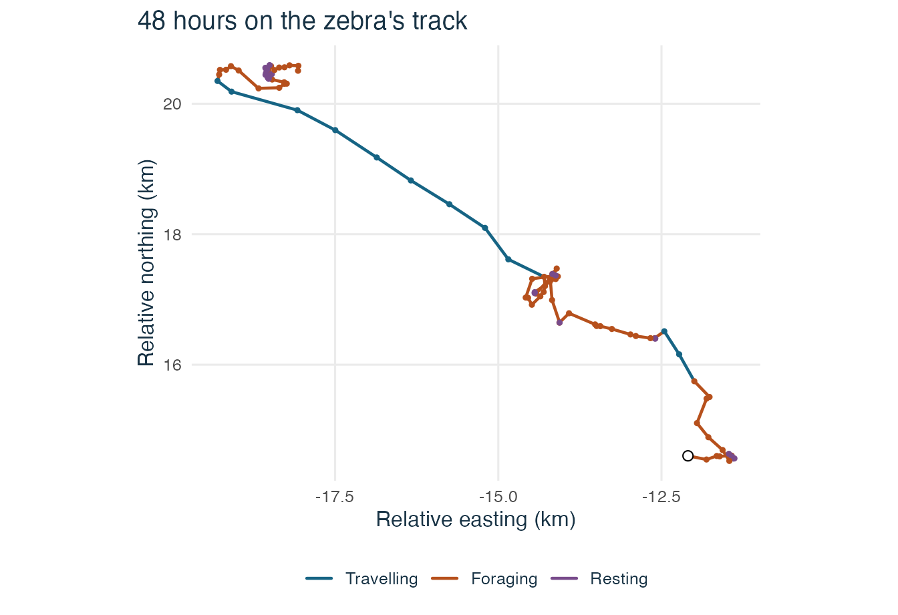
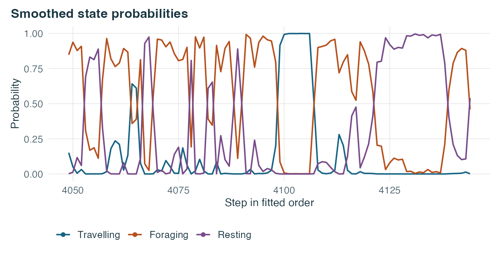
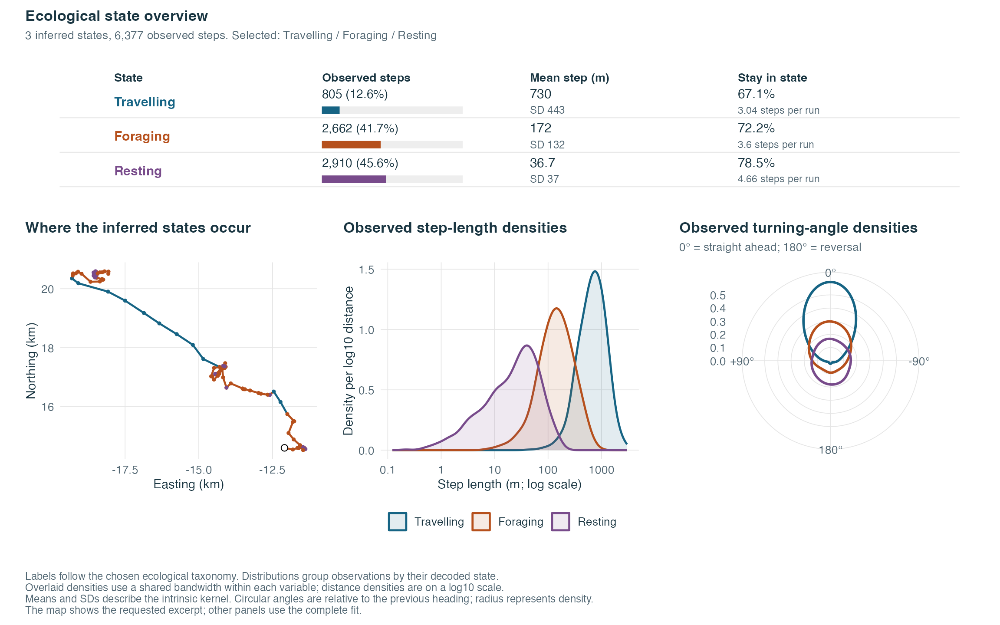

When does a zebra travel, forage or rest? We use the GPS track of one plains zebra in Hwange National Park, Zimbabwe, and the rules proposed by Bouderbala, Nicosia and Fortin (2026). The package includes 6,377 observed steps, each 30 minutes long. Gaps separate the track into 28 segments.
The original tracking study is Michelot et al. (2020). Simon Chamaillé-Jammes provided the GPS track and vegetation raster used in the Klappstein et al. archive, distributed under CC BY 4.0.
Fit the models
The prepared data give each step’s length and turning angle, along with the direction to the nearest grassland cell from the start of the step. This makes the target available before the zebra moves.
library(behavSSF)
zebra <- readRDS(system.file("extdata", "hwange-zebra-steps.rds",
package = "behavSSF"))
steps <- prepare_ssf_steps(zebra, density_measure = "area",
time = "time", expected_interval = 1800)
result <- fit_guided_ssf(
steps, convention = "area", target = "cos_diff_theta_to_target",
normalization = "exact", n_starts = 8, short_iter = 100, long_iter = 900,
seed = 1729
)
result
#> Guided HMM-SSF with 6377 observed steps
#> Candidate taxonomies in the order tried
#> HDT_F_R (Habitat-directed travelling / Foraging / Resting) [Rejected]
#> The 95% confidence interval for the travelling state's target effect must
#> lie entirely above zero.
#> T_F_R (Travelling / Foraging / Resting) [Selected]With the default taxonomy, the function first tries habitat-directed travelling (HDT), foraging and resting. The travelling state must have the longest mean step and more concentrated turns than the foraging state. For the HDT label, the 95% confidence interval for the travelling state’s grassland coefficient must lie above zero. If that model fails its checks, the function tries travelling, foraging and resting without a grassland term, then travelling and encamped, and finally a single state. It stops at the first model that passes.
Read the labels
The article reported habitat-directed travelling, foraging and resting. Its archived code chose the nearest grassland cell using the observed step endpoint. Here the cell is chosen at the start of the step, and the likelihood is integrated directly. In this fit the travelling state’s grassland interval includes zero, so the package selects travelling, foraging and resting.
overview <- summary(result)
states <- overview$states
knitr::kable(data.frame(
State = states$state,
Steps = states$n_steps,
`Mean step (m)` = round(1000 * states$mean_step),
check.names = FALSE
))| State | Steps | Mean step (m) |
|---|---|---|
| Travelling | 805 | 730 |
| Foraging | 2662 | 172 |
| Resting | 2910 | 37 |
The counts come from the Viterbi sequence, which assigns one label to
each step. The means come from the fitted movement distributions.
overview$candidates gives the outcome of each candidate
that was tried.
See the states on the track
This map shows the first 48 hours of the longest segment. The open circle marks where the excerpt starts.
library(ggplot2)
#> Warning: package 'ggplot2' was built under R version 4.5.2
theme_set(theme_ssf())
knitr::opts_chunk$set(dev.args = list(bg = "white"))
longest <- names(which.max(table(zebra$ID)))
plot(result, type = "track", segment = longest, step_range = c(1, 96)) +
labs(title = "48 hours on the zebra's track",
x = "Relative easting (km)", y = "Relative northing (km)")
The probability plot shows how strongly the fitted model supports each state. When two curves are close, the model gives similar support to the two labels at that step.

Read the ecological states together
The useful result is a set of states that we can interpret, with the measurements that support those names. This view brings them together. Colours follow the labels in every panel. This movement-only fit has no additional covariates, so the overview omits a coefficient panel. The map uses the same 48-hour excerpt; the table and distributions use all 6,377 observed steps.
library(patchwork)
plot(result, type = "states", step_scale = 1000, step_unit = "m",
coord_unit = "km", segment = longest, step_range = c(1, 96))
Travelling combines long steps with strong persistence in the previous heading. Foraging has intermediate lengths and weaker persistence. Resting has short steps and little directional persistence. These are the operational meanings of the article’s labels at a 30-minute interval. The GPS data alone do not establish that the animal was feeding or asleep.
The overlaid densities show observed movements grouped by their
decoded state. The distance panel uses a log10 scale with a common
smoothing bandwidth. The circular panel uses ggcircular:
zero means straight ahead, and 180 degrees means a reversal. Its
bandwidth is shared by all states. They help read the classification,
but do not independently validate it. Means and SDs in the table come
from the fitted intrinsic movement kernel; they are not the empirical
means of those groups. The stay probability and expected run length
describe the fitted transition model.
To export the table, use
ssf_state_summary(result, step_scale = 1000, step_unit = "m").
For a separate figure, use
plot_ssf_states(result, panel = "distributions") or
panel = "coefficients". These functions also work with a
fitted model and an accepted custom taxonomy assessment.
Change the step-length distribution
The same labels can be applied to different movement models. Here we give the three states names based on their mean step length. The labels describe the lengths estimated by the model at the 30-minute sampling interval.
length_regimes <- ssf_taxonomy(
"length_regimes", c("Short", "Intermediate", "Long"),
formula = ~ cos_angle + cos_diff_theta_to_target
)
length_fit <- fit_guided_ssf(
steps, convention = "area", taxonomies = list(length_regimes),
step_family = "weibull", normalization = "exact",
n_starts = 8, short_iter = 100, long_iter = 900, seed = 1729
)
summary(length_fit)
#> Candidate taxonomies in the order tried
#> length_regimes (Short / Intermediate / Long) [Selected]
#>
#> HMM-SSF summary
#> 6377 observed steps in 28 segment(s)
#> Normalisation: exact | density measure: area
#> Step-length family: weibull
#> Log likelihood: 12084
#> Converged: TRUE | positive Hessian: TRUE | scaled gradient: 3.833e-13
#>
#> States (Viterbi assignments)
#> state n_steps fraction mean_step persistence
#> Short 2786 0.4369 0.03726 -0.05815
#> Intermediate 2732 0.4284 0.16366 0.61340
#> Long 859 0.1347 0.68498 2.31714
#>
#> Step-selection coefficients
#> state term estimate std_error
#> Short step_shape 0.98177 0.018046
#> Short step_scale 0.03696 0.001939
#> Short cos_angle -0.05815 0.034849
#> Short cos_diff_theta_to_target 0.04444 0.032262
#> Intermediate step_shape 1.27839 0.041199
#> Intermediate step_scale 0.17659 0.008373
#> Intermediate cos_angle 0.61340 0.051760
#> Intermediate cos_diff_theta_to_target 0.12475 0.036643
#> Long step_shape 1.57813 0.071365
#> Long step_scale 0.76300 0.033531
#> Long cos_angle 2.31714 0.153591
#> Long cos_diff_theta_to_target 0.14002 0.087851
#>
#> Transition probabilities (rows are origin states)
#> Short Intermediate Long
#> Short 0.7954 0.1874 0.01721
#> Intermediate 0.1605 0.7495 0.08997
#> Long 0.1284 0.1722 0.69944Use step_family = "gamma" to fit the same taxonomy with
a gamma distribution. The other choices are "lognormal",
"inverse_gaussian", "halfnormal" and
"exponential". The family supplies the length distribution,
so the formula gives the turning and target terms. To add vegetation at
the endpoint, use case-control rows with that covariate on both used and
available endpoints and choose importance normalisation.
The track and habitat raster come from the article’s Figshare supplement. The original GPS data are also available in the archive of Klappstein, Thomas and Michelot.
To compare different numbers of states with your own labels and ecological rules, see Choose the number of states with your own taxonomy.